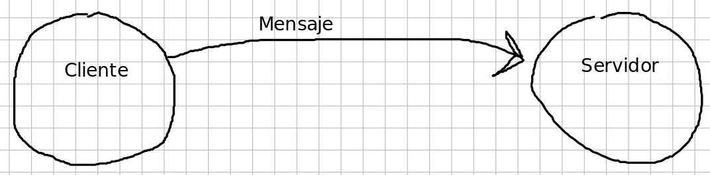

PAW Integra diversas lineas
No existe un único enfoque posible
Sistema de Nombres de Dominio
Nombres de Dominio deben ser resueltos por un servicio DNS
Fase de Desarrollo: Resolución local
Ejemplo: www.example.com -> local.www.example.com
Fase de Desarrollo: Resolución local
¿Donde?
/etc/hosts
c:\windows\system32\drivers\etc\hosts
Fase de Desarrollo: Resolución local
Como?
127.0.0.1 localhost local.www.example.com
Protocolo fundamental
Utiliza servicios de TCP
Cliente / Servidor
PDU: Mensajes en ASCII (versión 1.1)
Sin Estado
Requiere software diferenciado entre cliente y servidor
Al ser protocolo, existen infinidad de implementaciones
Cliente: Browser o Navegador
Servidor: Web Server
Versiones de HTTP
HTTP 0.9
HTTP 1.0
HTTP 1.1
HTTP 2.0
Futuro? HTTP 3
Versiones de HTTP
¿Que impacto tiene sobre el desarrollo web?
Modelo Cliente Servidor
Modelo Cliente Servidor

Forma de Operación

Forma de Operación - Varios recursos


GET /index.html HTTP/1.1
METODO PATH HTTP_VERSION/r/n
GET
POST
PUT, DELETE, HEAD, otros
/index.html
HTTP 1.0, 1.1

GET /index.html HTTP/1.1
Name-Of-Header: value/r/n
Opciónal segun método

HTTP/1.1 200 OK
VERSION STATUS_CODE STATUS_MESSAGE/r/n
2XX: Petición procesada con exito
3XX: Avisos de Redirección
4XX: Existe un problema en la Petición
5XX: Sucedio un error en el procesamiento de la Petición

¿Tipo de Contenido del Cuerpo?
HTML, CSS, JS (Texto)
Multimedia (MIME)
Algunos conceptos es necesario refrescarlos o manejarlos adecuadamente
OOP - Patrones
Estructuras de datos
Mapeo Objeto Relacional - ORM
Ingenieria de Software y SQL
Consola o CLI
GIT
Obligatorio para entrega de TPs
GIT
Algo de material introductorio